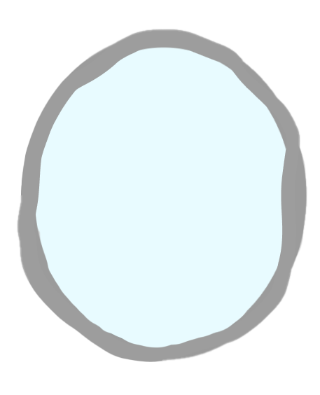
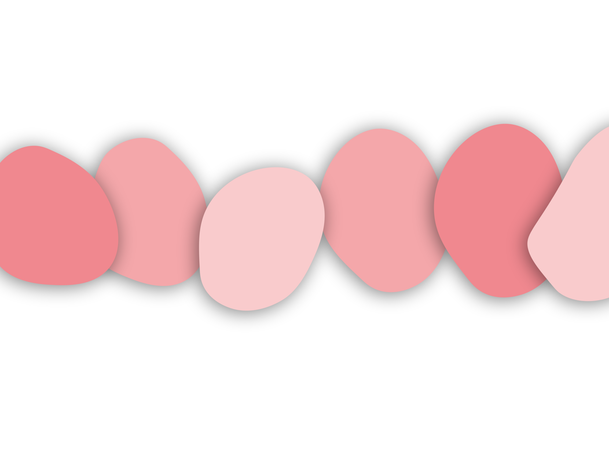
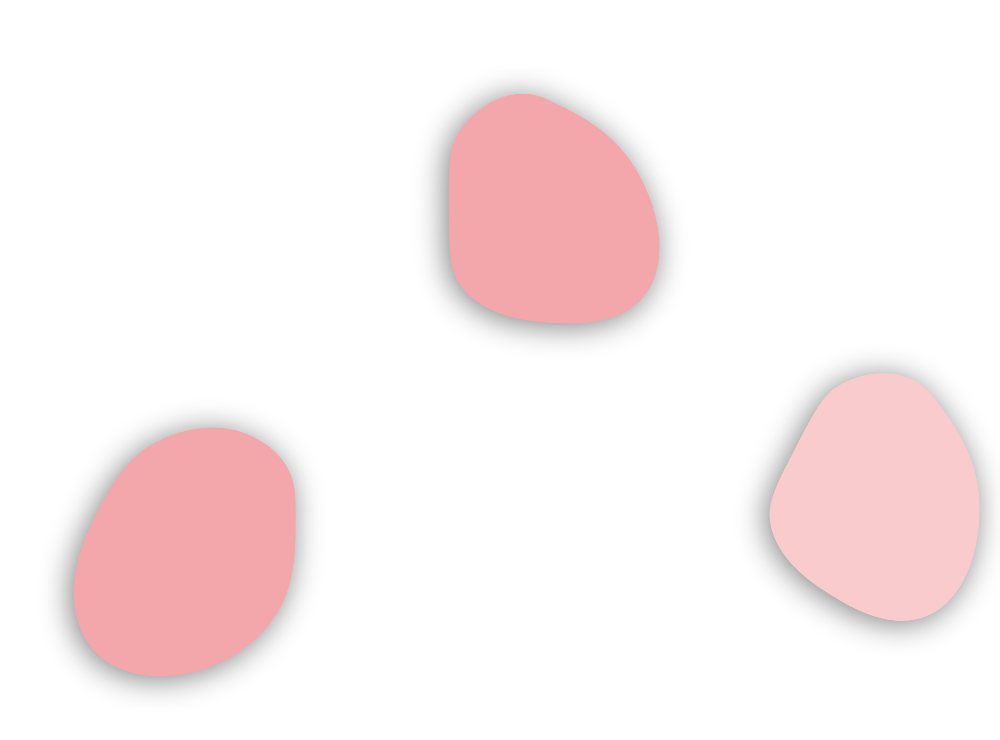
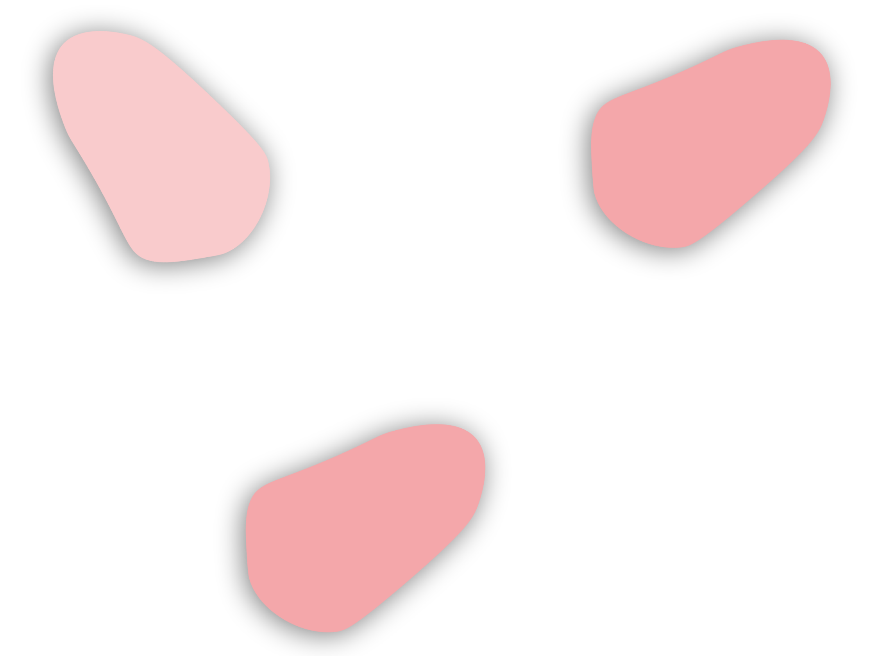
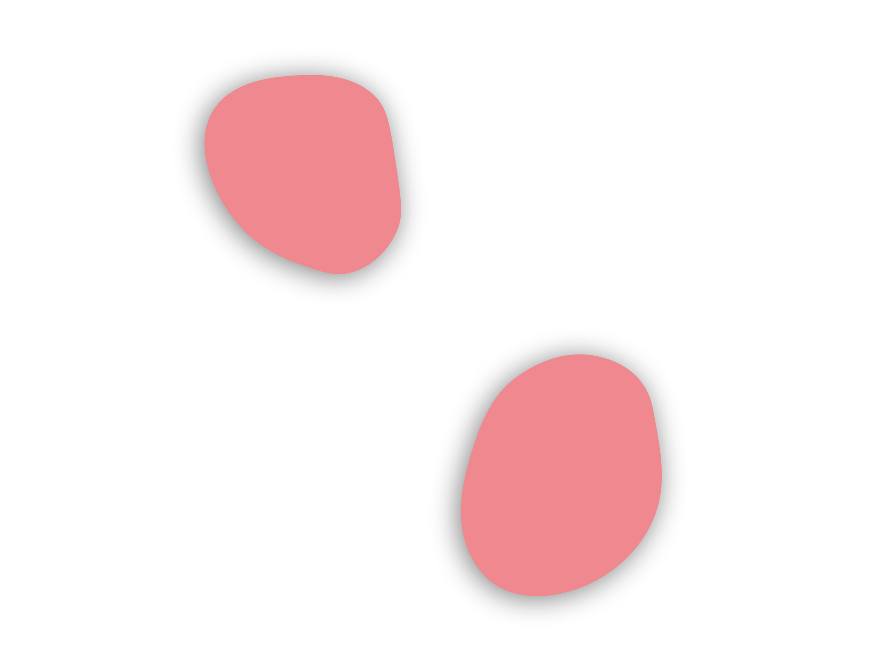
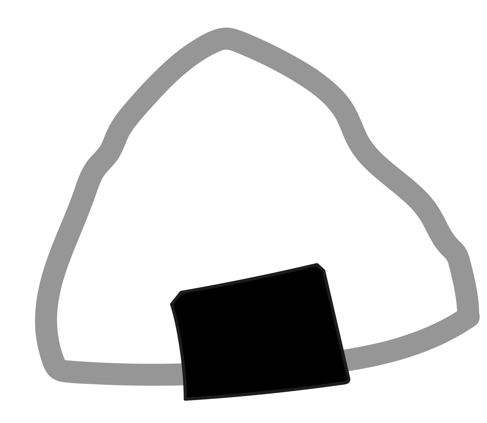
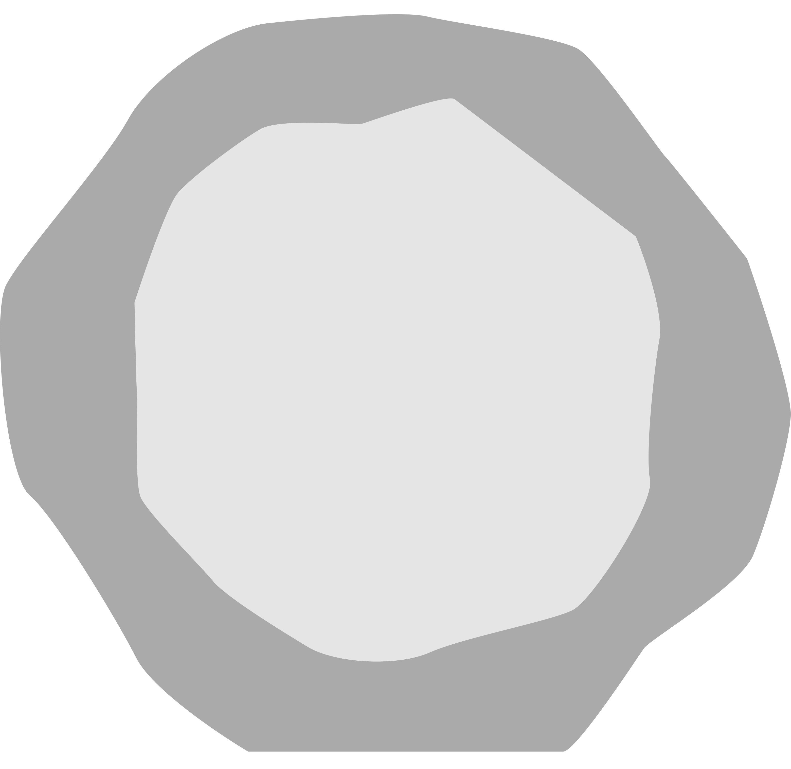

Cher journal, aujourd'hui je suis dans l'avion. Papa m'a offert un carnet pour ma nouvelle vie. Alors, je vais raconter tout le voyage !
Ça a commencé il y a quelques mois, quand papa m'a dit qu'on allait vivre au japon ! Il m'a expliqué que c'était pour le travail et qu'il faisait ça pour nous, qu'on aurait une meilleure vie. J'étais trop contente mais on devait prendre des cours de japonais, et c'est tellement difficile je voulais pas mais papa m'a forcé !
Quand je l'ai dit à mes amies, elles m'ont demandé si on allait encore se voir, elles tristes et moi aussi. Heureusement j'ai pu leur dire au revoir parce que ma maman elle a fait une fête d'adieu avec plein de gâteaux miam !!! il y avait même mon gâteau favori. Maintenant je crois que je vais te dire au revoir parce que je vais avoir du mal à écrire, la dame de l'air m'apporte le repas.





Cher journal, aujourd'hui on a encore visité un peu les endroits du Japon avec maman, il y a plein de trucs que je n'avais jamais vue avant, c'est comme dans les mangas et j'ai même un peu parlé japonais avec un moine dans un joli temple, maintenant je comprends pourquoi papa m'avait pris des cours. Maman m'a acheté plein de pâtisserie elle ne peut rien me refuser.
Demain c'est mon premier jour d'école maman m'a dit que quand j'arriverai les autres élèves auront déjà commencé les cours depuis AVRIL, ils sont bizarres ces Japonais, j'espère que je vais me faire plein d'amies. En tout cas j'ai hâte d'être demain.
Cher journal, j'ai essayé de me faire des amies mais ici, on ne veut pas de moi. J'ai essayé de leur parler, mais ils ne me comprennent pas. Ils rigolent tout doucement, ça a l'air tellement faux ! Ils sont tellement froid ! J'ai retrouvé des dessins de baleines sur mon bureau. Pourquoi ici c'est pas comme en Belgique ?
J'ai essayé de m'intégrer et de jouer avec elles mais je ne comprends pas leur jeux, ils sont trop bizarres.
Ici tout le monde est maigre, j'ai l'air super grosse à côté d'eux. Je suis la seule qui a ses fesses qui dépassent de la chaise, quand on doit courir je suis toujours dernière.
Aussi, ils mangent pas que des sashimis, ils mangent beaucoup de riz et j'aime pas le riz, ça goute rien ! J'ai pleuré toutes les larmes de mon corps, je n'ai pas envie d'y retourner demain !

Cher journal, je me suis enfin fait une amie 😊 ! Elle s'appelle Yuna et elle a le même âge que moi !
On s'est rencontrée à un repas entre voisin ! Ma maman les a invités chez nous, et même que les voisins ont apporté des mochi ! C'était tout mou mais c'était booooon !
La maman de Yuna a parlé du hara hachi bu, elle a expliqué que c'est s'arrêter de manger juste avant qu'on soit plein, et même qu'elle a dit que Yuna ça l'avait beaucoup aidé.
Après on a été joué, elle m'a appris à jouer au menko, c'est un jeu de carte, et on a discuté, on s'est tellement amusées qu'elle m'a invité demain à sortir avec ses copines.
Cher journal, je suis soulagée j'ai eu peur au début de ne pas avoir d'amie ici mais maintenant je me sens mieux, je me sens plus japonaise.
Yuna m'a présenté à ses autres copines, certaines sont sympas ! On est sorti en ville toutes ensemble, et dans la ville j'ai découvert le karaoké au Japon, je me suis beaucoup amusée.
La maman de Yuna et maman s'échangent des recettes alors je commence à manger japonais même à la maison ! Maman dit que c'est moins calorique, peut être que ça va me faire maigrir et que les gens ne vont plus se moquer de moi ?